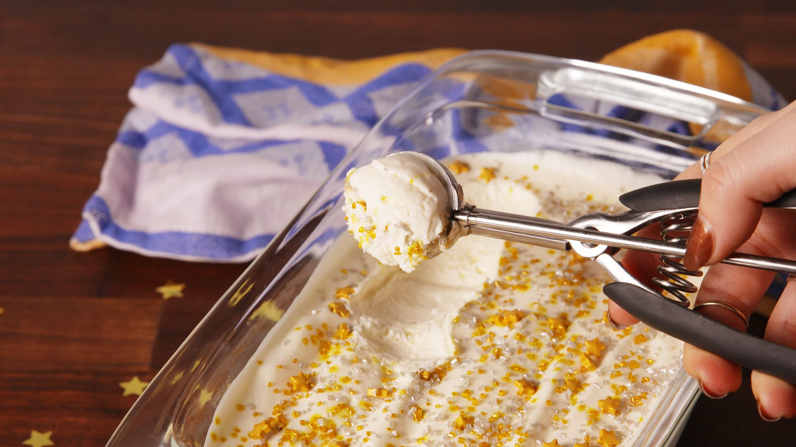

Cherry Cheesecake Ice Cream
INGREDIENTS :
- 3 c. cold heavy cream
- 1 14-oz. can sweetened condensed milk
- 1 tsp. pure vanilla extract
- 1 c. hand crushed graham crackers (about 4 whole crackers), plus more for garnish
- 1 c. cherry pie filling
METHOD :
- In a large bowl using a hand mixer, beat cream until stiff peaks form, 2 to 3 minutes.
- Fold in sweetened condensed milk and vanilla until fully incorporated, then fold in crushed graham crackers.
- Transfer half the mixture to a 9"-x-5" loaf pan. Dollop 1/2 cup pie filling over top, then swirl with a knife. Add remaining cream mixture, then swirl in remaining 1/2 cup pie filling. Top with graham crackers.
- Freeze until firm, at least 8 hours, covering lightly with plastic wrap after 4 hours.
- Let soften 10 minutes before scooping and serving.